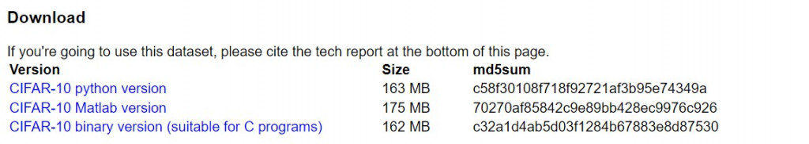
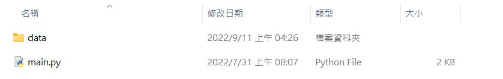

【day7】解析gz檔案 & 使用Pytorch做CIFAR10影像辨識 (上)
發布日期: 2022-09-11 05:51:34
原文連結: https://ithelp.ithome.com.tw/articles/10289155
我們前幾天用的深度學習函式庫是Tensorflow作為後端，並用keras快速實現深度神經網路，這樣的做法雖然可以簡易的完成一些簡易的AI程式，但無法實現複雜的神經網路及預訓練模型(pre-trained model)，所以通常會使用keras學習AI的基礎知識，再來使用Tensorflow或Pytorch作為最終的訓練工具，我這邊會推薦使用Pytorch，所以之後的課程都會以Pytorch為主
解析gz檔
在我們【day3】來辨識圖像-深度神經網路(Deep Neural Network)的課程中，可以看到透過keras下載的資料集是一個無法打開的文件，須通過程式內部的解析才能了解內容，但如果我今天想要裡面的圖片存在自己的電腦裡或做為資料集使用呢?所以今天要來教如何解開gz檔，在獲得資料的同時也能讓你更理解圖片維度的意義。
- 1.下載資料與安裝函式庫
- 2.讀取資料並整理資料
- 3.迴圈與儲存資料
下載資料與安裝函式庫
首先我們先到下載資料官方網站裡面下載CIFAR-10 python version

接下來我們把gz檔解壓縮，並且創一個叫做data的資料夾將data_batch_1~data_batch_5與test_batch存放起來，並且在外面創建一個python檔案，此時我們的畫面應該會長這個樣子

接下來是安裝函式庫
pip install opencv-python
這樣子就可以開始寫程式啦
讀取資料並整理資料
先來導入今天需要的函式庫
import pickle as pk
import numpy as np
import cv2
import os
接下來看到官方網站中有教我們該如何打開gz的方式，我們先觀察這樣會回傳什麼樣的資料。
def unpickle(file):
with open(file, 'rb') as fo:
dict = pickle.load(fo, encoding='bytes')
return dict
print(unpickle('data/data_batch_1'))
----------------------------顯示----------------------------
{b'batch_label': b'training batch 1 of 5',
b'labels': [label資料]
b'data': array([[圖片資料]], dtype=uint8)
b'filenames': [檔案名稱]}
可以看到這個資料了型態會是一個dict，每一個資料裡面都是一個陣列，我們只需要將labels作為資料夾分類使用filenames作為data的圖片的檔名就可以存檔....個鬼，在官方網站中有這樣一段話
3072 bytes are the values of the pixels of the image. The first 1024 bytes are the red channel values, the next 1024 the green, and the final 1024 the blue. The values are stored in row-major order, so the first 32 bytes are the red channel values of the first row of the image.
(每張圖片共3072個資料，第一個1024個為紅色的通道的資料，接下來是1024個綠色通道，最後是1024個為藍色，每個資料都是按照優先順序排列的，因此前32個資料是第一行的紅色資料)。
在這裡就需要先說明一下電腦儲存影像的方式了首先我們可以知道三原色(紅R、綠G、藍B)可以組合出任一的顏色，所以我們只需要給予一個像素一組紅、綠、藍的資料再將這個資料組合在一起就可以變成一張圖片，在CIFAR10中圖片大小是32x32的，所以在文章中所提到的3072筆其實就是32x32x3。所以按照官方的意思我們在圖片1x1的位子就會是資料中的第0筆(R) 第1024筆(G) 第2048筆(B)並依照這個格式組成一張32x32的圖片。
我們先改寫一下官方的範例讓我們更好拿到資料
def unpickle(file):
#開啟檔案視為2進位
with open(file, 'rb') as fo:
#解析開啟後的gz檔
gz_dict = pk.load(fo, encoding='bytes')
return gz_dict[b'labels'],gz_dict[b'filenames'],gz_dict[b'data']
labels,names, datas = unpickle(f'data/data_batch_1')
接下來將每筆data放入迴圈中並將通道分成R,G,B
for data in datas:
R = data[:1024]
G = data[1024:2048]
B = data[2048:3072]
最後我們把數據組成圖片一張圖片
img,tmp = [],[]
#enumerate 計數程式用法與range(len(data))回傳值是(計數的值,資料)
for cnt,(r,g,b) in enumerate(zip(R,G,B),1):
#創立一個像素(在這邊使用b,g,r是因為opencv存檔的格式是bgr)
tmp.append([b, g, r])
#每32個像素換下一列
if cnt % 32 == 0:
#將整行的像素存入陣列中
img.append(tmp)
tmp = []
迴圈與儲存資料
剛剛只讀取了data_batch_1這個檔案，但我們今天需要重複6次相同的動作，這時我們可以透過os.listdir讀取資料夾內容的名稱，並透過迴圈讀取資料。
#os.listdir('路徑')回傳值為[檔名1~檔名n]
for path in os.listdir('data'):
labels,names, datas = unpickle(f'data/{path}')
為了儲存圖片可以使用makedirs創建資料夾，但makedirs在迴圈中就會因為創建過資料夾而導致程式錯誤，這邊就能使用try...except的語句做處理。
#嘗試做動作
try:
os.makedirs(f'pic/train/{label}')
os.makedirs(f'pic/test/{label}')
#若無法執行則會執行這裡
except:
#不做任何事情
pass
運用opencv儲存剛剛整理好的影像
cv2.imwrite(path, np.array(img))
可以知道資料集需要分成測試數據集與訓練數據集，在CIFAR10中test_batch就是我們的訓練數據集，所以我們就能用if判斷該資料是訓練還是測試資料。
#測試數據集
if path == 'test_batch':
#把資料存進剛剛建立好的資料夾中 過濾掉檔名裡面的'b'與'符號
cv2.imwrite(f'pic/test/{label}/{str(name)[2:-1]}', np.array(img))
else:
cv2.imwrite(f'pic/train/{label}/{str(name)[2:-1]}', np.array(img))
最後讓我們把程式組合起來
完整程式碼
import pickle as pk
import numpy as np
import cv2
import os
def unpickle(file):
with open(file, 'rb') as fo:
gz_dict = pk.load(fo, encoding='bytes')
return gz_dict[b'labels'],gz_dict[b'filenames'],gz_dict[b'data']
for path in os.listdir('data'):
labels,names, datas = unpickle(f'data/{path}')
for label, name, data in zip(labels,names,datas):
try:
os.makedirs(f'pic/train/{label}')
os.makedirs(f'pic/test/{label}')
except:
pass
R = data[:1024]
G = data[1024:2048]
B = data[2048:3072]
img,tmp = [],[]
for cnt,(r,g,b) in enumerate(zip(R,G,B),1):
tmp.append([b, g, r])
if cnt % 32 == 0:
img.append(tmp)
tmp = []
if path == 'test_batch':
cv2.imwrite(f'pic/test/{label}/{str(name)[2:-1]}', np.array(img))
else:
cv2.imwrite(f'pic/train/{label}/{str(name)[2:-1]}', np.array(img))
這樣子可以得到資料啦，明天先來說說GPU加速與再來開始pytorch的教學
課程中的程式碼都能從我的github專案中看到
https://github.com/AUSTIN2526/learn-AI-in-30-days